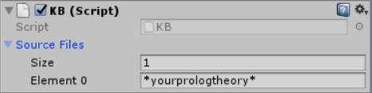
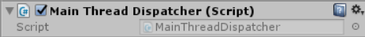

Download
After a detailed project analysis, let's describe what are the steps that one has to follow in order to use the Unity Actor Simulator framework. First of all, we need to get the proper material.1. General
If you are not into actors' framework then the only step required is to download the Unity Actor Simulator's dll and copy it into your unity project's Assets folder. More precisely, the Unity Editor detects every newly added file and tries to load it. This process generates a .meta file, associated to the new file, that states that the loading process has completed correctly. It is important to underline that Unity detects new items everytime you focus on the Unity Editor application. If the dll file has been properly loaded, then you should be able to access to its content via script. Lastly, if the library contains any Component script, you are able to attach them to your GameObjects via the Add Component button in the Inspector GUI view.On the other hand, you can decide to import the whole source code inside your Assets/Plugins folder. Unity will automatically detect the files and create a new C# project eventually.
2. Examples
If you want to see how you can use the Unity Actor Simulator's dll or you simply don't want to start from scratch with this project, you can download from this link a Unity project with some examples inside. Once downloaded, you can directly start working from it or take a look at its content in order to have an idea of the steps that you have to follow in order to simulate your stuff in Unity. For further information about the given project, please check Examples section.Note: A Unity Project can be opened in two different ways. The first method expects that you use the Unity Editor to open the project (File -> Open Scene). However, in this way there may be the possibility that no scene will be automatically loaded. In order to do so, you have to double click on one of the already existing scene files (.unity extension). On the other hand, it is possible to directly open the Unity Editor by double clicking on a scene file. You can find scene files under the Assets folder.
3. QActors framework only
On the other hand, if you are using the professor's framework for any kind of educational purpose, here you can download the Unity Actor Connector .jar package that contains the most basic example of a java tcp connector (the one used in the Examples section).Plugins
Since the Unity Actor Simulator relies upon three plugins, that are Unity Prolog and UniRx and M2Mqtt, it is necessary to also install these libraries and follow their install documentation.Unity Prolog
The Unity Prolog library can be imported into your Unity project in the form of dll. You can directly download it by clicking here or you can build a new one by compiling the project . Once installed, as the documentation states, in order to use it we have to create a GameObject named GlobalKB and add the component KB to it. After that, it is possible to use the prolog interpreter by invoking methods like IsTrue or IsTrueParsed. For more information please take a look at the documentation .Note: If you are new with Unity and you have no idea how to create a GameObject here's what you have to do.
- Click on the GameObject menu.
- Select Create Empty or a primitive one from 3D Object or 2D Object from the list.
- Once created, select the GameObject and click on Add Component button under the Inspector GUI view.

Note: The type of the prolog theory files is .prolog.
UniRx
For what concerns UniRx, you can easily install it via the Unity Assets Store from your browser (it will open the download page on your Unity Editor) or you can just copy the whole folder from the Unity Actor Simulator repository into the Assets/Plugins folder of your Unity project (if you don't have one, just simply create it). Once installed, the only required step is to add the Main Thread Dispatcher script to a GameObject (i.e. Main Camera).

M2Mqtt
Since the reference implementation of the MQTT connectivity protocol is MQTT Paho, it is necessary to import the related dll file into your project's Assets folder. Once done you can properly use already existing scripts like MqttClientComponent, from the Unity Actor Simulator library, or you can define custom scripts that exploit the MQTT protocol.Note: The original M2Mqtt library is defined for .NET 4.5. Thus, in order to generate a Unity compliant dll, I had to build the project using .NET 3.5 as the target framework. The only difference is that the Unity compliant version does not support the following SSL protocols.
- TLSv1_1
- TLSv1_2
Note: If you want to use Hololens , it is necessary to add the M2Mqtt.WinRT.dll file to your project's Assets folder. Please check this forum post for more information.
Unity Actor Simulator
In order to use the Unity Actor Simulator framework you simply need to add the TcpConnectorListener and the SettingsDatabase components to some existing and hopefully persistent GameObjects. Once done, the only remaining step is to define the Json configurations and the prolog theories. That's all!Note: If you want to have an idea of how a complete working project is done, I strongly invite you to check the Examples section.